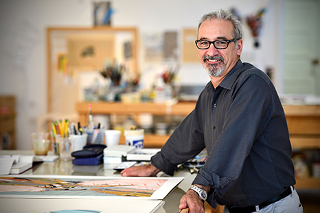

ABOUT SAM FOX
DESIGN. FASHION. ART. ARCHITECTURE.
A LETTER FROM THE DEAN
Dean Carmon Colangelo
This is an exciting time to be at work as an artist, designer, or architect. We are faced with unprecedented opportunities to shape our world and generate meaningful responses to social and environmental challenges. Digital technologies have transformed the way we live and the way we create, increasing the potential for interaction and communication as boundaries between the global and the local disappear ever more rapidly.
The creative terrain of our contemporary world demands a new educational paradigm. The Sam Fox School of Design & Visual Arts at Washington University in St. Louis provides a rigorous education in architecture, art, and design with the outstanding collection of a world-class art museum and the unparalleled resources of a leading research university. Innovation and collaboration are at the core of our mission of interdisciplinary study and practice. We recognize that design and the visual arts play significant roles in inspiring solutions to social and environmental concerns and have formulated an educational model that is flexible and attuned to the global realities of our complex century.
With a nationally recognized faculty of artists, designers, architects, and scholars, we are a community committed to exploring the convergences of art, architecture, and design. Our students are responsive and responsible—engaged in applying the tools of our fields to effect positive change.
Whether you are a prospective or current student, parent, alumnus, or friend, I invite you to engage the world with us. It is both exciting and inspiring.
Carmon Colangelo
Dean, Sam Fox School of Design & Visual Arts
E. Desmond Lee Professor for Collaboration in the Arts
The Sam Fox School of Design & Visual Arts is comprised of three central units, each of which boasts a rich history:
- The College of Art was founded in 1879 as the first professional, university-affiliated art school in the United States, and is the only art school to have fathered a major metropolitan art museum.
- The College of Architecture was established in 1910, and has the distinction of being one of the 10 founding members of the Association of Collegiate Schools of Architecture.
- The Mildred Lane Kemper Art Museum (formerly the Washington University Gallery of Art) was founded in 1881 as the first art museum west of the Mississippi River.
The Sam Fox School as we currently know it evolved over several years. The Visual Arts & Design Center (1997), subsequently named the Sam Fox Arts Center (2002), was envisioned as a hub for interdisciplinary programs among the College of Art, College of Architecture, Graduate School of Art, Graduate School of Architecture & Urban Design, Mildred Lane Kemper Art Museum, Art & Architecture Library, and Department of Art History & Archaeology in Arts & Sciences.
The vision grew to encompass the launch of a new school at Washington University in St. Louis. In January 2005, Chancellor Mark S. Wrighton announced the creation of the Sam Fox School of Design & Visual Arts, uniting the academic units of Art and Architecture with the University Museum under the leadership of a new dean.
The improvement, expansion, and construction of new facilities for this collaborative unit have been significant accomplishments. Renovations to Bixby and Givens Halls, home to Art and Architecture respectively, were completed in 2001. Two new buildings by renowned architect Fumihiko Maki—the Mildred Lane Kemper Art Museum and the Earl E. and Myrtle E. Walker Hall for the College and Graduate School of Art—were dedicated in October 2006. The rededication ceremony for Steinberg Hall was held February 22, 2009.
The School is named after Sam Fox, BSBA51, who was integral in the realization of this collaborative vision. One of St. Louis' most active philanthropic leaders, he is also one of the staunchest supporters of Washington University. He is founder, chairman, and chief executive officer of Harbour Group, Ltd., which acquires and builds companies for long-term investment. He and his wife, Marilyn, have received many awards for their philanthropy, including the 2004 Excellence in Philanthropy award from the Arts and Education Council.
HISTORY
The Kemper Art Museum being built.